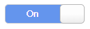
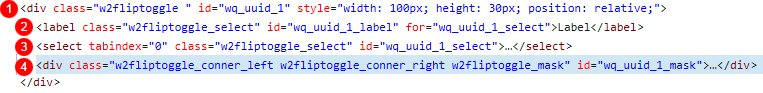

17.Fliptoggle
수정 일자 버전 (SP2)
WebSquare5 Studio : 20180117_1349_x86_B
WebSquare5 Engine : 5.0_2.2982B.20180223.154326_1.5
Fliptoggle은 터치 드래그를 통하여 on/off를 토글방식으로 선택할 수 있게끔 지원하는 모바일용 컴포넌트입니다.
17.1Property
Property | Description |
|---|---|
accessibility | [true,false] 모바일 접근성(iOS의 VoiceOver 및 Android의 TalkBack 기능 등)을 지원. true: 모바일 접근성 지원을 위해 버튼을 a 태그로 감싸고, aria-valuenow 및 aria-valuetext 같은 HTML 속성을 추가. false (기본값): 모바일 접근성 지원 기능을 비활성화. |
class | 사용자가 임의의 class를 정의할때 사용합니다. |
escape | <>&"를 HTML Escape 문자로 변환하여 화면에 표시할지를 결정합니다. |
id | 사용자가 임의의 id를 정의할때 사용합니다. |
label | 선택값들의 설명글을 입력합니다. |
tabIndex SP2 | Tab Key를 이용 한 컴포넌트의 포커스 순서로 HTML의 tabindex속성과 동일한 기능을 제공한다. |
useClickToggle | 클릭이벤트를 통해서도 동작하게 할지를 지정합니다. |
17.2브라우저 캡쳐화면
[그림 17-1]fliptoggle default 스타일
17.3class 적용과 스타일 변경

[그림 17-2]스타일 변경시 class를 xin이라 지정했을 경우
.xin .w2fliptoggle_left_label{color:white;} .xin .w2fliptoggle_left{background: cornflowerblue;} .xin .w2fliptoggle_right{background: cornflowerblue;}
17.4CSS Overriding

[그림 17-3]01
No | Class | Description |
|---|---|---|
1 | w2fliptoggle | 웹스퀘어 엔진에서 정의된 클래스입니다, 기본적으로 html 로 떨구는 시점에서 자동으로 부여됩니다. Fliptoggle의 전체 영역입니다. |
2 | w2fliptoggle_select | 웹스퀘어 엔진에서 정의된 클래스입니다, 기본적으로 html 로 떨구는 시점에서 자동으로 부여됩니다. Fliptoggle의 label글이 들어가는 영역입니다. 기본적으로 숨김처리되어 있습니다. |
3 | w2fliptoggle_select | w2fliptoggle_select는 웹스퀘어 엔진에서 정의된 클래스입니다, 기본적으로 html 로 떨구는 시점에서 자동으로 부여됩니다. Fliptoggle의 선택값 처리를 위한 select태그입니다. 기본적으로 숨김처리되어 있습니다. |
4 | w2fliptoggle_conner_left ,w2fliptoggle_conner_right ,w2fliptoggle_mask | 웹스퀘어 엔진에서 정의된 클래스입니다, 기본적으로 html 로 떨구는 시점에서 자동으로 부여됩니다. Fliptoggle의 실제 영역입니다. |
17.5주의사항 및 Tip
디자인뷰에서 더블클릭시 항목값을 변경할수 있습니다. 기본적으로는 on, off로 지정되어 있습니다.
[그림 17-4]02